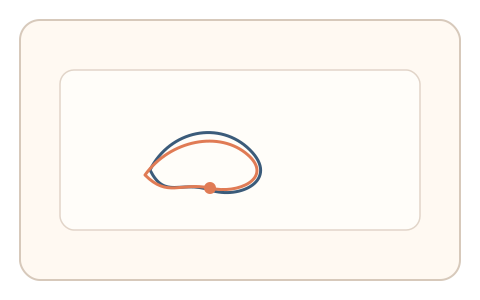
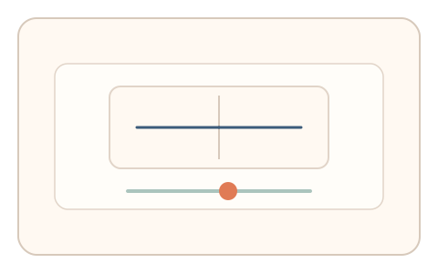

#100
Morphological Analysis - Combination Batches
已扩展
残影补全双阶段
先闪现残影图形并描摹轮廓，再进行对称阈值微调，以双阶段信号验证真实性。
概念原文
先闪现残影图形后立即要求描摹轮廓，再进入对称阈值微调，系统做任务内相对比较。任务结构为多阶段，信号形态为轨迹动力学与阈值调节。
把残影补全与阈值调节耦合成双信号验证。
研究背景
残影会在短时间内形成可感知的轮廓，用户描摹过程包含自然的曲率与速度特征；随后对称阈值微调进一步捕捉感知偏差。两阶段组合提高识别度。
核心机制
- 短暂闪现残影图形并隐藏。
- 用户描摹轮廓完成补全。
- 进入对称阈值滑杆微调。
- 比较描摹轨迹与阈值选择。
用户流程
- 步骤 1：用户看到残影闪现。
- 步骤 2：用户描摹轮廓完成补全。
- 步骤 3：用户微调对称阈值并判定。
判定信号
轮廓描摹曲率与速度
人类描摹会出现自然的曲率与停顿。
对称阈值偏差
感知对称的阈值分布具有稳定区间。
判定逻辑
描摹轨迹与阈值需落在人类分布区间；过度几何化或无微调判异常。
对抗面
- 脚本直接重绘轮廓并选择固定阈值
- 重放真实用户的描摹轨迹
防御与缓解
- 随机化残影形状与对称参数
- 加入轻微噪声降低模板化
- 叠加停顿与抖动信号进行多信号判定
可达性与风险
提供更大残影与慢速模式，允许选择题替代描摹。
- 残影强度不足影响描摹质量
- 设备刷新率影响残影呈现
可视化状态

状态 1：残影闪现
短暂闪现残影形状。

状态 2：轮廓描摹
用户描摹补全轮廓。

状态 3：阈值微调
对称阈值微调判定。
参考资料
Afterimage
说明残影与短时视觉记忆。
Symmetry
说明对称感知与阈值判断。